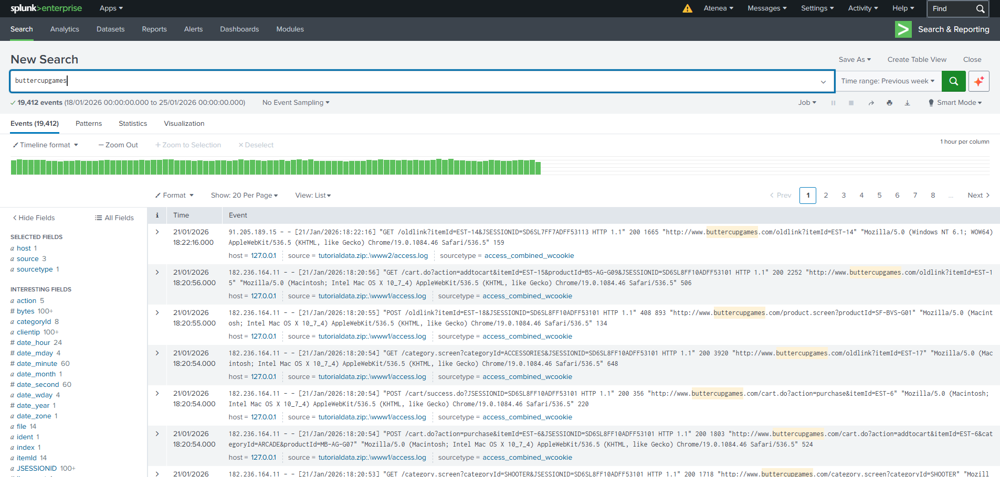
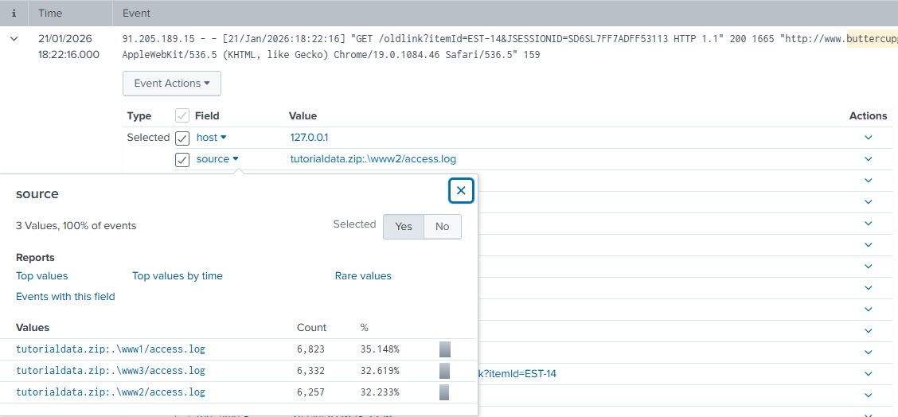

Portfolio — Datos & ciberfraude
Criminóloga · Analista de datos · Prevención del ciberfraude. Analizo logs y datos de fuentes distintas para encontrar patrones de fraude y ataque, y los traduzco en indicadores y en requisitos de control. Máster en Ciberdelincuencia (UNIR) y consultora en DCS Consulting.
Nota sobre este portafolio — une dos cosas que normalmente van separadas: el análisis de datos (Python, SQL, Splunk) y la lectura criminológica y legal del fraude. Los proyectos de código usan datasets públicos o de práctica; los entregables de DCS Consulting son reales y están anonimizados. La versión centrada en GRC está en sarablanz.github.io/portfolio.
00 · Cómo trabajo
El mismo recorrido en cada proyecto: explotar el dato, cruzarlo con otras fuentes, medirlo con indicadores y terminar en algo que se pueda implantar.
Extraer, limpiar y agregar grandes volúmenes de registros con SQL, Python (Pandas) y SPL.
Cruzar logs de seguridad, logs de negocio y fuentes externas (INCIBE, ENISA) para separar ruido de patrón.
Definir señales, umbrales y puntuaciones (probabilidad × impacto, niveles de alerta) que se puedan monitorizar.
→ Radar Cloud, SVNA
Traducir el hallazgo en un requisito funcional: qué detectar, qué bloquear, a quién escalar y con qué base legal.
01 · Laboratorio propio + código
Trabajo directo sobre registros de acceso: cómo se ingieren, qué campos aportan y qué consultas convierten miles de líneas en una alerta útil.
Laboratorio Splunk — autoformación
Instalé Splunk Enterprise 10.2 en local e ingerí el dataset de práctica Buttercup Games: tráfico simulado en formato Apache de una tienda online repartido en tres servidores web. A partir de ahí exploro los campos que extrae Splunk y construyo búsquedas orientadas a fraude: sesiones compartidas entre IPs, compras fallidas, errores concentrados y clientes atípicos.


Casos de uso SPL orientados a fraude
Una misma cookie de sesión desde IPs distintas es una señal clásica de robo de sesión (account takeover).
sourcetype=access_combined_wcookie | stats dc(clientip) AS ips values(clientip) AS lista BY JSESSIONID | where ips > 1 | sort - ips
Muchos intentos de compra rechazados desde una IP apuntan a pruebas de tarjetas robadas (card testing).
sourcetype=access_combined_wcookie action=purchase status!=200 | stats count AS fallos BY clientip | where fallos >= 5 | sort - fallos
Picos de 4xx/5xx por hora para separar caídas técnicas de barridos automatizados.
sourcetype=access_combined_wcookie status>=400 | timechart span=1h count BY status
Los user agents menos frecuentes suelen delatar bots y scripts.
sourcetype=access_combined_wcookie | rare useragent limit=10
Saber leer un log de negocio (una compra, un carrito, una sesión) como dato de seguridad. El fraude online no siempre deja un error técnico: deja un comportamiento raro en el flujo normal de compra, y hay que cruzar sesión, IP, acción y resultado para verlo.
Splunk Enterprise 10.2 (instalación local, ingesta de ficheros, sourcetype access_combined_wcookie), exploración de campos, comandos SPL stats, timechart, rare, where y dc().
Análisis de logs en Python
Dashboard de intentos de acceso fallidos: quién falla, desde dónde y cuándo.
Criterio para no confundir volumen con amenaza: interpretar el error en su contexto humano (rutinas, inicio de semana) antes de levantar una alerta.
Python, Pandas, Jupyter, dashboard en Matplotlib, agregación por IP y día.
Distribución horaria de errores de autenticación para detectar accesos automatizados o fuera de patrón.
Convertir una serie temporal de errores en una regla de detección concreta, con su umbral y su ventana horaria.
Parsing de logs en Python, agregación horaria, visualización con Matplotlib.
Ranking de las direcciones IP con más errores de acceso para priorizar la revisión.
Priorizar: con recursos limitados, empezar por las pocas fuentes que generan la mayor parte del riesgo.
Python, conteo y ranking por IP, visualización del top 5.
02 · Código
Grandes volúmenes, fuentes externas y machine learning: las piezas de un modelo analítico de fraude.
Exploración de un dataset público real de delitos de gran volumen, con un modelo no supervisado para agrupar patrones delictivos.
Unir la teoría criminológica (dónde, cuándo y cómo se concentra el delito) con técnicas de datos para encontrar patrones en volúmenes que no se pueden revisar a mano.
Python, Pandas, scripts y notebooks, modelo no supervisado, visualizaciones, control de versiones con Git.
Limpieza, one-hot encoding, feature engineering de fechas y modelo XGBClassifier para predecir un resultado binario.
Conocer el ciclo completo de un modelo supervisado (preparar variables, entrenar, predecir) para participar en la mejora de los modelos analíticos y entender sus límites.
Python, Pandas, scikit-learn, XGBoost, tratamiento de nulos, one-hot encoding, variables derivadas de fecha.
Notebook del TFM que cruza datos oficiales de INCIBE y ENISA para comparar tendencias de incidentes y sistemas más atacados, más una calculadora que convierte los controles de una empresa en un nivel de madurez.
Situar los datos internos frente al contexto nacional y europeo para saber si un patrón es propio o una tendencia general.
Python, Pandas, Matplotlib, Jupyter, dataset de incidentes de fuentes oficiales, calculadora de nivel RECRIPEI-CR (5 niveles).
03 · Inteligencia de amenazas
Desde la criminología: cómo opera el defraudador, por qué funciona el engaño y dónde hay que poner la detección.
El vector que salta el doble factor y las passkeys (kit Kali365, aviso del FBI de mayo de 2026): la víctima introduce el código en la web legítima del proveedor, así que ni filtros de correo ni reputación de dominios lo paran.
Vigilar amenazas nuevas y explicar dónde falla el control actual: el ataque no roba la contraseña, aprovecha que autenticarse y conceder acceso son dos pasos distintos.
Fuente primaria (IC3/FBI) contrastada con prensa especializada, análisis del flujo OAuth de código de dispositivo, recomendaciones por perfil de usuario.
Estafas con deepfakes de Elon Musk en YouTube y TikTok (2024): mecánica del engaño, carácter transfronterizo y contraste con un uso lícito de la misma tecnología.
Entender cómo la IA generativa abarata la suplantación de figuras de confianza, uno de los vectores que más crece contra clientes de banca.
Análisis de caso mediático transfronterizo, comparación de usos lícito/ilícito de IA generativa, seguimiento del fraude en plataformas sociales.
Desmontaje de una falsa oportunidad de inversión: modelo de negocio, promesas de rentabilidad y señales de alerta para el cliente.
Identificar las señales que un cliente o un gestor debería ver antes de transferir dinero a una inversión fraudulenta.
Análisis del modelo de negocio fraudulento, fundamentos de blockchain y minería en la nube, catálogo de señales de alerta.
Proyecto grupal (UNIR, 5 autoras): de la ideación a la condena. Mi bloque: víctimas de phishing, estafa y malware, y de stalking y daños informáticos, con los oficios de investigación (solicitud de IP, intervención telemática, cooperación internacional).
Saber qué datos pedirá una investigación si un fraude acaba en denuncia, para conservarlos desde el primer momento.
Medidas de investigación con y sin autorización judicial, redacción de oficios, trabajo en equipo de 5 personas.
Diccionario de más de 25 conductas (phishing, spoofing, sextorsión, deepfake, doxxing…) ordenadas por tipología y bien jurídico protegido. Prácticas externas, Plataforma PDA Bullying.
Un marco de clasificación reutilizable como catálogo de tipologías para etiquetar alertas y casos.
Clasificación por bien jurídico y tipología, definiciones operativas, supervisión de tutor profesional y académico.
Suplantación de identidad, difusión no consentida y acoso en redes, con jurisprudencia del Tribunal Supremo: cuándo el incidente se convierte en delito.
Criterio para la suplantación de marca o de empleados en canales digitales: qué es delito, qué no, y cómo actuar.
Revisión de jurisprudencia del Tribunal Supremo, clasificación por bien jurídico protegido.
04 · Trabajo real
Herramientas y entregables donde el análisis termina en una puntuación, un nivel de alerta o un plan de controles.
Autodiagnóstico interactivo para pymes con 14 señales de fraude y seguridad en la nube (correo, identidad y accesos, backups, terceros), puntuación probabilidad × impacto con coste de mitigación y resultado en semáforo.
Diseño de un catálogo de indicadores con su puntuación y su prioridad, publicado y en uso con empresas reales.
Matriz probabilidad × impacto, coste de mitigación, semáforo de prioridad, HTML/JavaScript, captación de respuestas con formulario.
Diagnóstico con el modelo RECRIPEI-CR (5 niveles de madurez): 8 riesgos priorizados (2 altos, 4 medios, 2 bajos), hoja de ruta RGPD/NIS2 y plan de acción de 0 € en 4 meses. Datos anonimizados con consentimiento.
Llevar un análisis hasta el final: de la entrevista al riesgo priorizado y de ahí a controles con plazo y coste.
Entrevista de diagnóstico, matriz de priorización, modelo RECRIPEI-CR, marco RGPD/NIS2, plan de acción en cuatro fases.
Diseño de las fases III–IV de un sistema de valoración por niveles de alerta: cada conducta detectada se asigna a un nivel, a su artículo del Código Penal y a un protocolo de derivación. Prácticas externas (99,5 h).
Definir requisitos funcionales de un sistema de alertas: qué dispara cada nivel, quién recibe el caso y qué se hace después.
Sistema de Valoración por Niveles de Alerta, mapeo conducta → artículo del Código Penal, protocolos de derivación.
Matriz 5×5 probabilidad × impacto en Python: riesgo inherente, riesgo residual tras aplicar controles y priorización automática.
Cuantificar la eficacia de los controles para decidir dónde invertir.
Python, Pandas, Matplotlib; riesgo residual = inherente × (1 − eficacia del control).
Cómo conservar la evidencia de un incidente para que valga ante un tribunal: ISO/IEC 27037, LECrim (LO 13/2015) y admisibilidad de WhatsApp según el Tribunal Supremo.
Que los logs y datos de un caso de fraude se conserven de forma que sirvan como prueba.
ISO/IEC 27037:2012, LECrim arts. 588 sexies/ter/septies/octies, herramientas forenses de referencia (Autopsy, FTK Imager, Wireshark).
05 · Experiencia profesional
Supervisión de turnos, control de accesos y auditoría de activos en la infraestructura crítica de un Data Center.
8 años de control administrativo-operativo de procesos productivos, gestión documental e informes diarios.
Consultoría de riesgos digitales y fraude para pymes: Radar Cloud, diagnósticos, blog de amenazas y web propia construida a mano.
dcsconsulting.es →06 · Herramientas